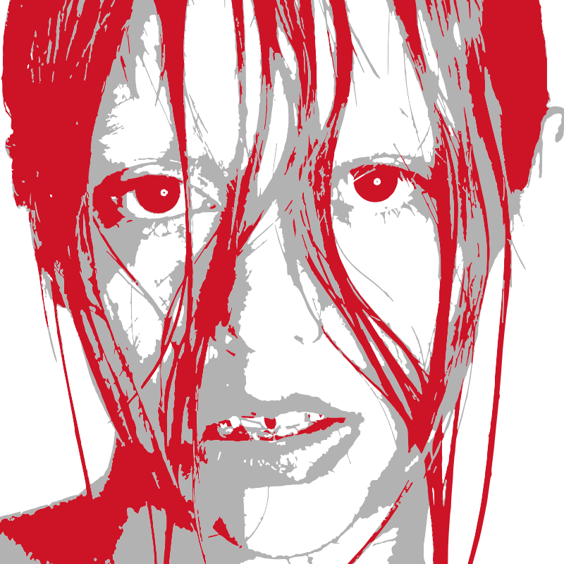

Akriila

Akriila sobresale por la mezcla de sensibilidad emocional y agresividad sonora. Sus producciones incorporan elementos del trap, la electrónica y el reguetón alternativo, mientras que sus letras abordan temas como la identidad, la ansiedad o las relaciones desde una perspectiva íntima y generacional.
VOLVER A LA GALERÍA